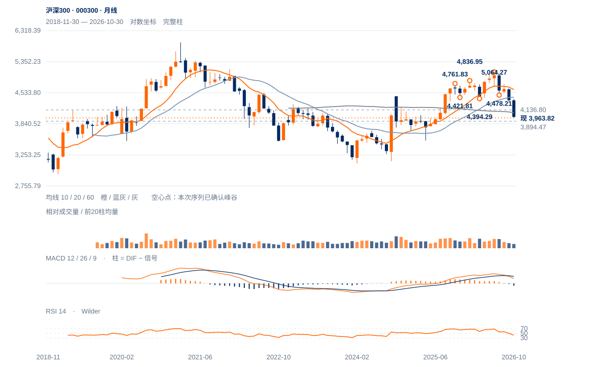

近期由单日极小幅回收上调为初步守位，向上推进仍受4000—4070约束，偏反复检验而非直接恢复。
沪深300 · 2026-11-24完整收盘
3958上方连续两收，4000为何仍是障碍？
3,963.82+0.14%
二日回收与幅度不足
分期限展望
未来2—6周相较单日轻收回略有改善，但4000—4070的上推回吐仍限制恢复。3958若连续保持并再收4000，失败下破解释增强；4137两日才涉及更大的波段结构。
未来1—3个月以2021/2026高区下的中期重建为主，完整20月均衡4427仍远。原主要谷先恢复再形成较高周谷，才逐步减轻年中5064高后下降；本次二日回收尚不足以完成该过程。

长期背景
2021高5931未被2026高5064超越，2024低3108以来上涨已深回撤。4086半幅参照与较长期均衡仍在上方，完整20月均衡4427；3958新回收改善日线，尚不足以修完大尺度损伤。 当前日收盘3,963.82与完整10月月线分开观察；11月尚未结束。
中期结构与新证据
完整周线已更新至11月20日：2026-07-30低4,478.21（2026-08-14确认）；2026-08-18高4,744.01（2026-09-04确认）；2026-10-23低3,958.14（2026-11-06确认）。最新一周与上次11月20日背景分别保存；24日国内与23日美股仅为本周进行中观察。23、24日分别收3958.29、3963.82，已连续两收高于3958.14旧谷，较昨日极小幅回收增加了时间证据。24日高4011.69、开4004.04，最终仅收3963.82，日幅位置11%；4000上方未保持。旧20日失效与新二日回收是两段事实。
确认与失效
保持3958日收基础，再跨4000—4070；4137原两日条件不变。
再次日收低于3958削弱新回收，3901.49为23日极值风险区。
主要反方
若连续守3958并收回4000，失败下破的解释增强；今日高开回落使回收的质量仍偏弱。
波动与量能
RSI14 32.82；ATR14 62.44；相对量1.04倍